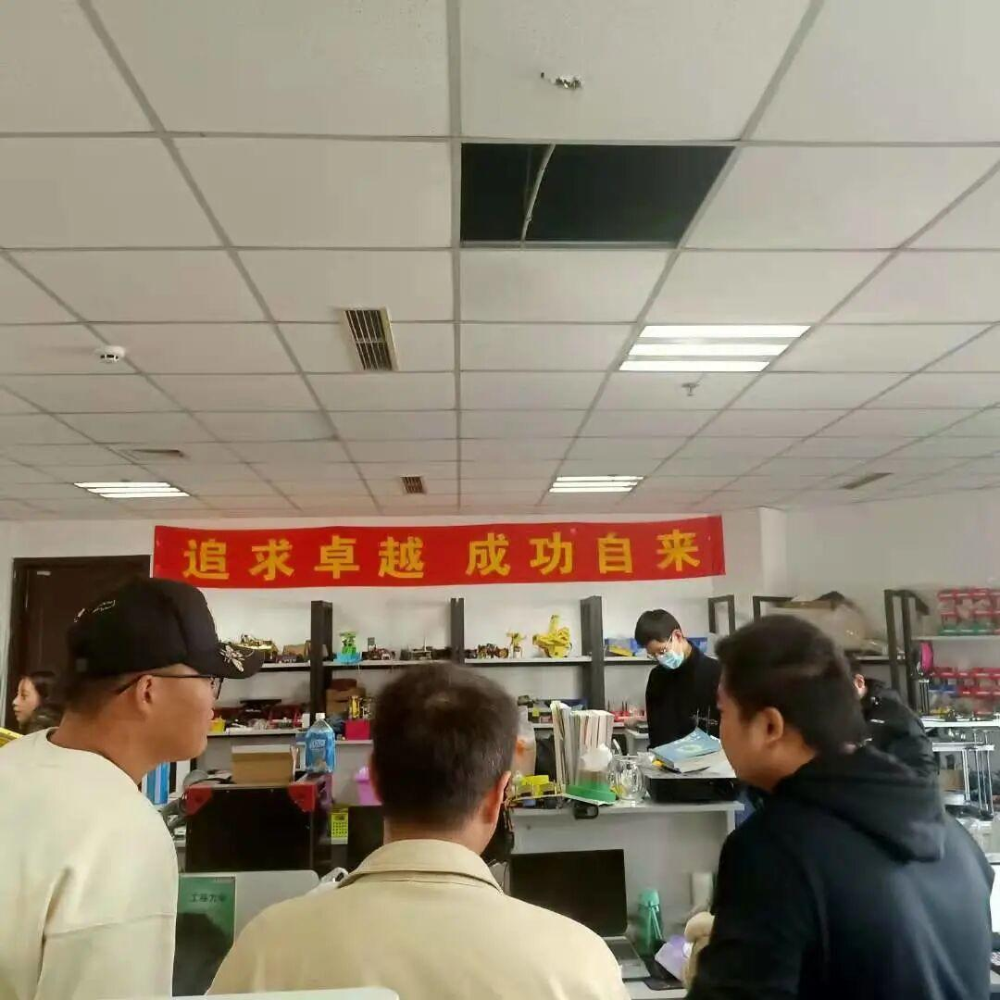
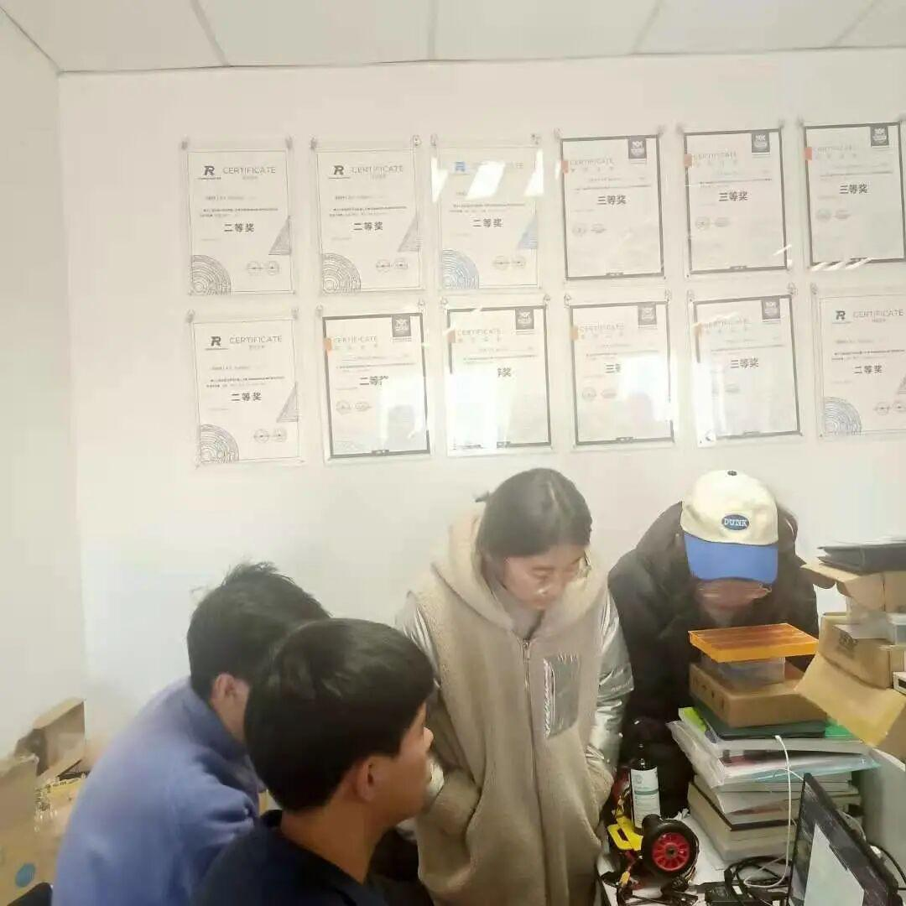
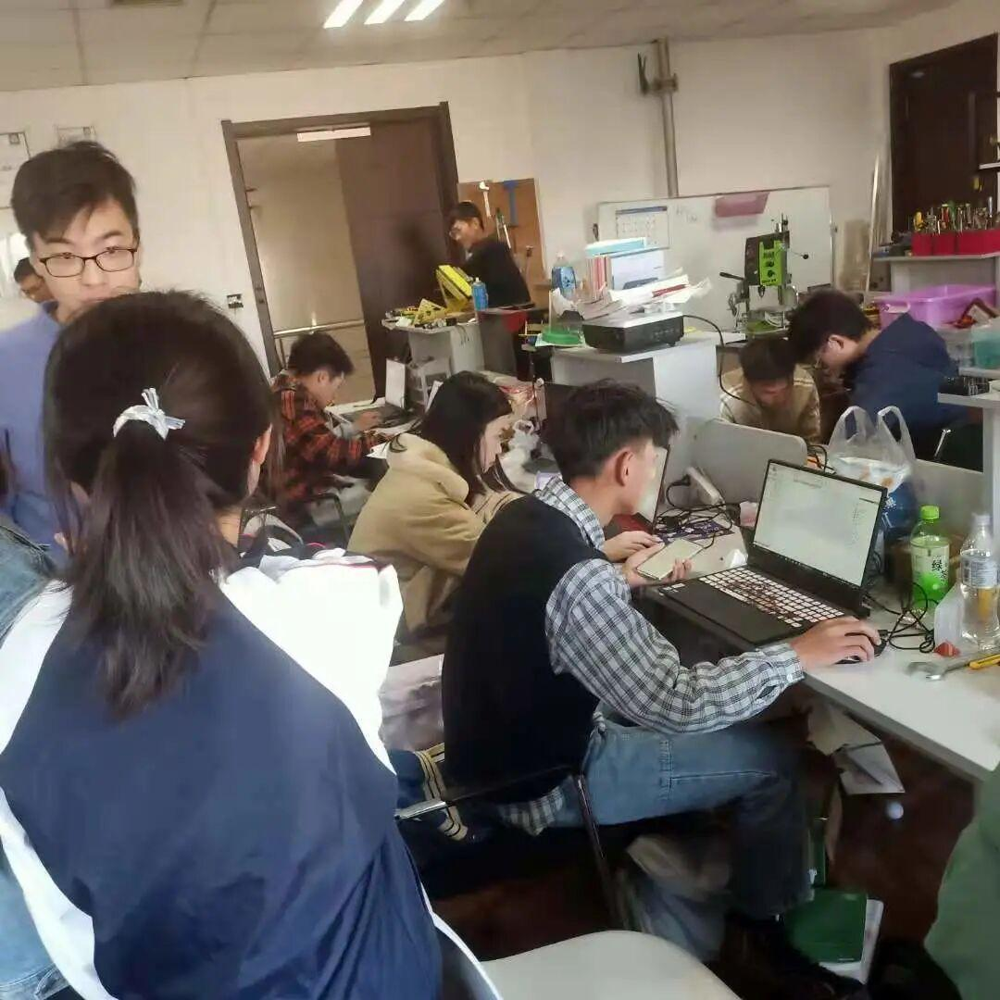
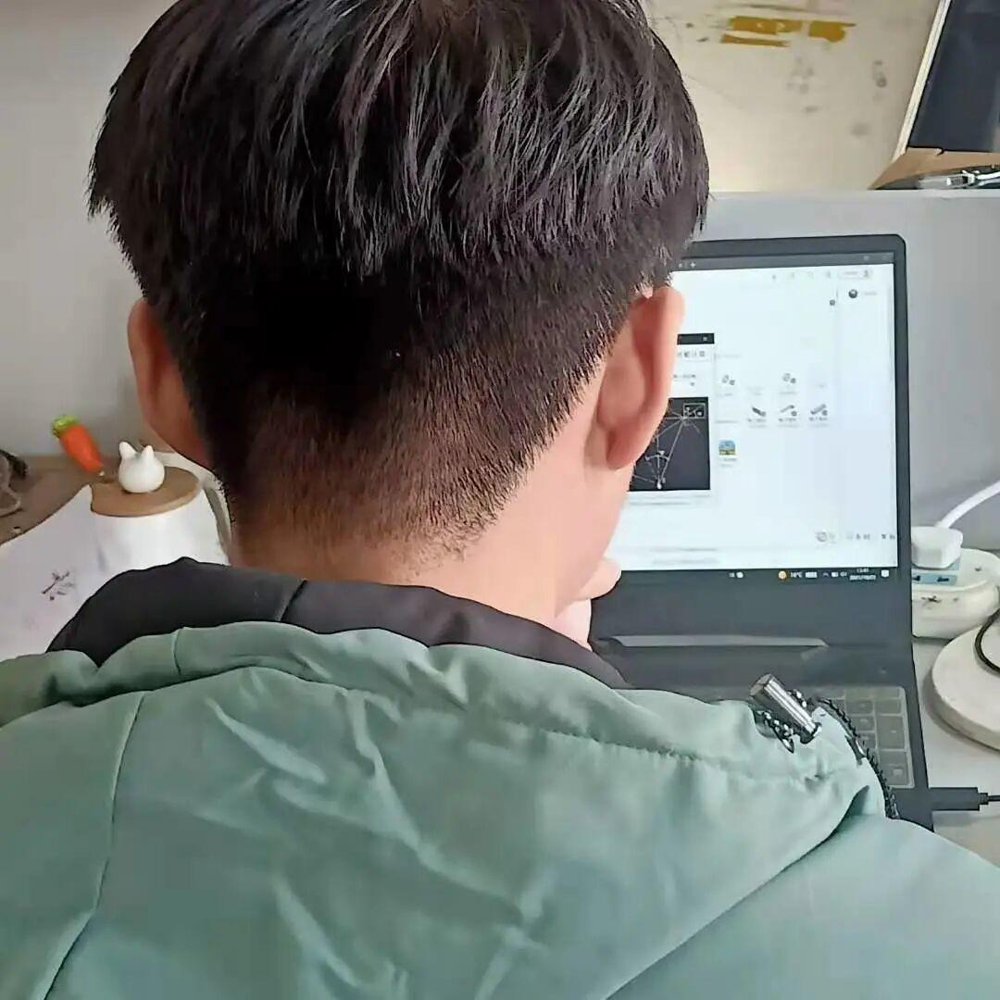
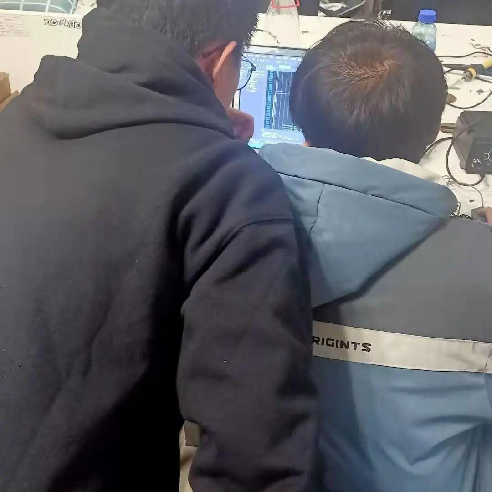

Ambition战队招新圆满结束
战队欢迎你
十月带着落叶的声音来了，一年一度的战队招新也开始了，自从去年Ambition战队勇创佳绩，战队再攀高峰
如今，伴随着新的战队成员加入，战队成员必将奋勇争先，砥砺前行，书写崭新的篇章
战
Welcome
to
Ambition

加入招新QQ群了解更多
敬请关注
Ambition战队成立于2017年，主要参加RoboMaster机甲大师全国大学生机器人竞赛，全国大学生电子设计大赛以及各种科技竞赛，曾多次获得国家级二、三等奖，省级一、二、三等奖；战队硬件资源充足，加工设备丰富，基础材料齐全，为队员提供了良好的实践环境和完备的培训体系。
招新人数不做具体限制，视考核完成情况而定，战队考核通过则作为预备队员加入Ambition战队参与后续学习与备赛，过程中视学习进度、队内考核完成情况及备赛过程中所作出贡献，在当赛季给予正式队员或预备队员资格




41
硬件
大二（延后考核）：关一郎 孙慧 范鑫文 李亚杰
大一：鲍相成
电控
大二：谭德众 张兰鑫 李景毅 撒浩杰 李开栓 王明玮 朱海妮
大一：赵泽西 代志明 宋嘉鑫 周鑫浩 周建佳
机械
大二：梁俊吉 王玺然 叶佩祺 王伦 李鹏飞 熊樱 周博 高雅婷刘航池 陈奕帆
大一：隋昌林 田烽 苏展 樊盈盈 孔祥喆
视觉
大二：
舒铭 刘佳旺 勾伯涛
大一：
耿婉琪 刘畅 傅昆凡 梁顺利
运营
大二：苗力文 牛星月




END
文字：李现亮
排版：李现亮